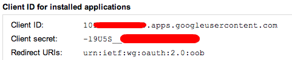

Setting domain wide signatures for Google Mail
Using Google Apps Script and Google docs
While Google mail’s compliance footers are great for legal compliance, Google currently don’t offer an easy way to set signatures for all your users that are based on user specific variables. I had a quick look at the existing offerings but I also noticed that due to the openness of Google’s APIs it's easy to pull data from a Google spreadsheet and push out the signatures to users across a domain. Giving us:
- Centrally managed user data in a simple spreadsheet
- A legal compliance footer enforced on all outbound emails
- A quickly customisable signature with contact details that can be edited/updated by users (no more waiting for IT to update your contact details)
As Google Apps Script doesn't connect to the Google email settings API directly, this also makes use of Google Apps Script's support of oauth to securely authenticate from Google Apps Script to the Google email settings API. This post includes setup instructions and an overview of how it works, if you just want the code feel free to skip to the end...
Variables
There are three types of variables, they all use the same syntax so it's important to know that they are resolved in the below order:
- Company wide variables
- These can be used for Logos or other things that are the same across the entire company
- They are taken from the Signature Settings sheet (this sheet also contains the template)
- Group wide variables
- These can be used for team specific parts of a signature, certification logos or office contact info
- These are taken from the Signature Group Settings sheet
- They must mach a Summary sheet column heading, so each user has a separate value for the setting, but they get substitute out if a table to replace them exists in the Signature Group Settings sheet
- User specific variables
- These are per user settings (E.g contact numbers, names, etc)
- They are taken from the Summary sheet column headings

note: The sheet names mentioned above are currently hardcoded names to prevent too many settings, but if you have a look at code you'll see they can easily be changed.
Syntax
The syntax for the templates is fairly simple (though suggestions for making it more readable are welcomed)
- The script will prompt you for 4 variables
- regOpen this goes at the front of a section to be substituted, I use ${
- regClose this goes at the end of a section to be substituted, I use }$
- tagOpen this goes at the front the variable to be substituted, I use {
- tagClose this goes at the end of the variable to be substituted, I use }
- If the variable is blank for the user then the section from regOpen to regClose is removed
- If there is a value for the variable then it is put in between tagOpen and tagClose and one set of opens and closes are removed but the text between them is left
- If you use multiple instances of the variable in a section that might be removed then the regOpen tags must be repeated.
e.g.
[t] - 0207 183 3893 ${ (ext. {Office Ext #}) }<br>
${[m] -<a ${href="tel:{Mobile #}"} ${value="{Mobile #}"}>{Mobile #}<a><br>}$
${{Primary Office}}<br>
Authorisation
The script requires the user running it has domain superadmin privileges to run as it uses the provisioning API.
The authorisation chain is a little confusing, but it is done this way to prevent having to put the domain oauth key into the script properties. You have to setup a project, then input it's oauth details into the script.
You could skip this extra step and put the domain wide oauth key in the user script properties are safe and can't be read by other users, however as you're giving domain wide access with these credentials extra security is a good idea.
Get the Oauth details
- Go to the Google API console https://code.google.com/apis/console/b/0/
- Create a project
- Create an Oauth 2.0 client ID (Type "installed application" > other)
- Copy the clientID "e.g. 10XXXXXXXXXXX.apps.googleusercontent.com" with scope https://apps-apis.google.com/a/feeds/emailsettings/
- Use the ClientID and Client secret from the api console

- Put the details into the scripts user properties
Authorising the script
- The first time you run the script it will ask for authorisation to run the script
- Then it will ask for authorisation to access the project
- Then the next time you run it, it will ask for access to the Gmail Settings APIs
- After this everything is authorised
Code
The code is mostly self explanatory, however if you have any questions or feedback please let me know.